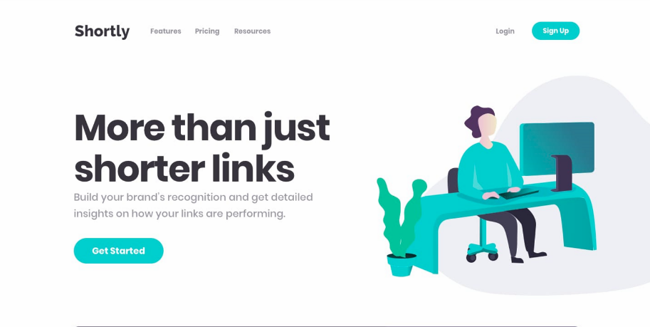
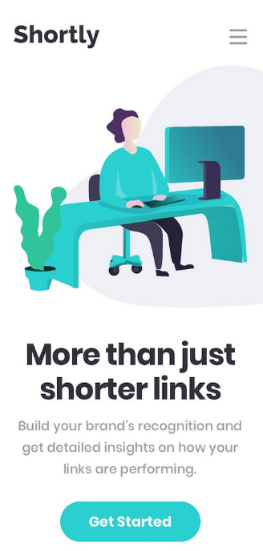

-


Roll The Rift
Roll the Rift is a robust webApp that lets users discover fun new ways to play league of legends,Inspired by similar community apps like Ultimate Bravery, Roll the Rift is a FULL random loadout and champion generator, ensuring no two games are the same.
Roll The Rift was built with React.js and utilizes Riot's RESTful api known as Datadragon for all game related queries(Champion names, images etc.) and Google's Firestore Firebase to store saved builds that users can retrieve at a later point.
- Firebase
- React.Js
- API
- HTML / CSS
- JS
-
 
URL Shortener [Work in progress]
URL Shortener is a small and simple PSD conversion project that allows users to paste in valid HTML links and have them shortened to much smaller and convenient links for sharing with friends and family.
URL Shortener is built using React.JS and utilizes shrtcodes link shortening API to reduce links down to bite size. URL Shortener is PSD conversion project hosted by FrontEndMentor meaning all assets in the project belong to FrontEndMentor.
- React.Js
- API
- HTML / CSS
- JS
-
Podcast Prioritizer [Work in progress]
Podcast Prioritizer is a collaborative project and is a robust webApp that helps users decide on which method of active transportation is best suited for them based on the podcast they want to listen to and where they intend to go.
Podcast Prioritizer is built with React.js and utilizes ListenNotes RESTful api for all podcast related queries and MapQuests Geocoding API for search prediction and MapQuests Directions API for calculating distance between two given locations.
- React.Js
- API
- HTML / CSS
- JS